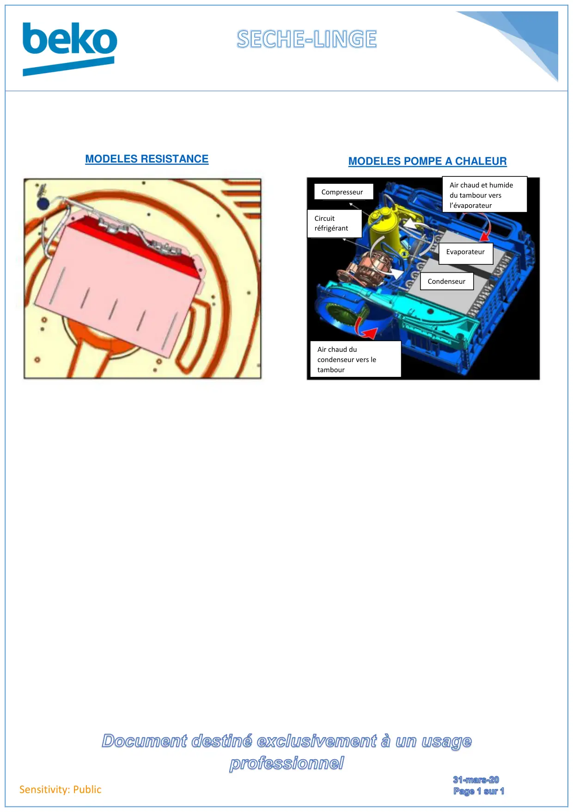

Seche linge CHOIX RES OU PAC

Sensitivity: PublicMODELES RESISTANCEMODELES POMPE A CHALEURAir chaud ducondenseur vers letambourAir chaud et humidedu tambour versl’évaporateurCircuitréfrigérantCompresseurCondenseurEvaporateur
1 / 1


Gros électroménager
Ressources techniques SAV — Beko · Grundig · Whirlpool · Hotpoint · Indesit.
